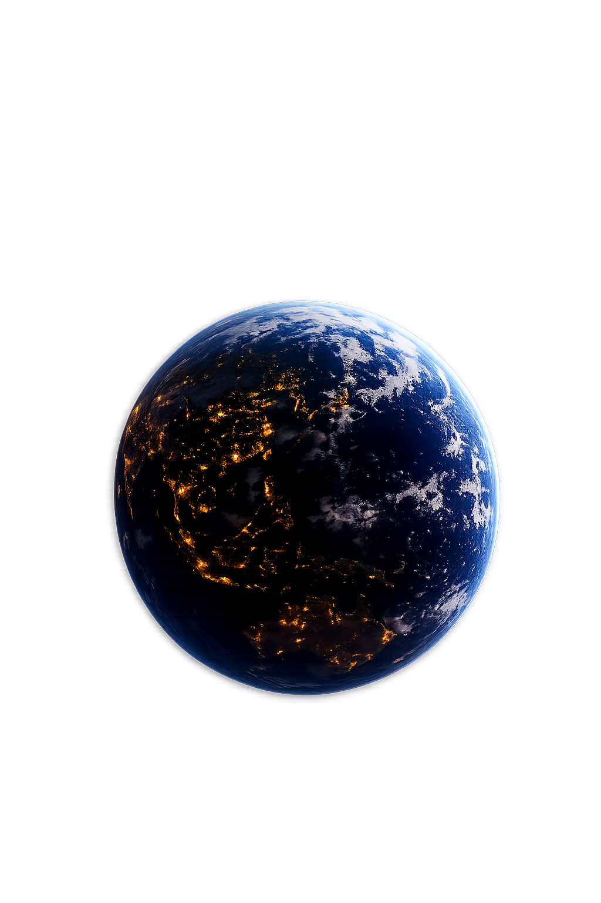

自动换行
<!doctype html>
<html lang="zh-CN">
<head>
<meta charset="utf-8">
<meta name="viewport" content="width=device-width, initial-scale=1">
<title></title>
<style>
* {
box-sizing: border-box;
}

html,
body {
width: 100%;
height: 100%;
margin: 0;
overflow: hidden;
}

body {
display: grid;
place-items: center;
background-color: #000;
background-image: url("space-bg.jpg");
background-position: center center;
background-size: cover;
background-repeat: no-repeat;
}

.star-field {
position: fixed;
inset: 0;
z-index: 0;
pointer-events: none;
}

.star {
position: absolute;
top: var(--y);
left: var(--x);
width: var(--size);
height: var(--size);
border-radius: 50%;
color: var(--color);
background: currentColor;
animation: breathe-star 4s ease-in-out var(--delay) infinite;
will-change: opacity, transform, filter;
}

.approach {
position: fixed;
top: 8vh;
left: 8vw;
z-index: 1;
width: min(68vmin, 680px);
aspect-ratio: 1;
transform: translate(-50%, -50%) scale(.02);
transform-origin: center;
animation: approach-earth 7s linear forwards;
will-change: top, left, transform;
}

.earth {
position: relative;
width: 100%;
height: 100%;
overflow: hidden;
border-radius: 50%;
animation: rotate-earth 60s linear infinite;
will-change: transform;
}

.earth img {
position: absolute;
top: -74%;
left: 50%;
width: 151%;
height: auto;
display: block;
transform: translateX(-50%);
pointer-events: none;
user-select: none;
}

@keyframes rotate-earth {
to {
transform: rotate(360deg);
}
}

@keyframes approach-earth {
from {
top: 8vh;
left: 8vw;
transform: translate(-50%, -50%) scale(.02);
}

to {
top: 50vh;
left: 50vw;
transform: translate(-50%, -50%) scale(1);
}
}

@keyframes breathe-star {
0%,
100% {
opacity: .22;
filter: brightness(.9);
transform: scale(.82);
}

50% {
opacity: 1;
filter: brightness(2.1);
transform: scale(1.35);
}
}
</style>
</head>
<body>
<div class="star-field" aria-hidden="true">
<span class="star" style="--x: 7%; --y: 15%; --size: 3px; --color: #fff; --duration: 5.7s; --delay: -1.2s"></span>
<span class="star" style="--x: 18%; --y: 36%; --size: 2px; --color: #e8f2ff; --duration: 6.8s; --delay: -4.7s"></span>
<span class="star" style="--x: 10%; --y: 63%; --size: 3px; --color: #fff; --duration: 6.2s; --delay: -2.9s"></span>
<span class="star" style="--x: 22%; --y: 91%; --size: 2px; --color: #edf5ff; --duration: 7.1s; --delay: -5.6s"></span>
<span class="star" style="--x: 75%; --y: 9%; --size: 3px; --color: #fff; --duration: 5.9s; --delay: -3.8s"></span>
<span class="star" style="--x: 91%; --y: 38%; --size: 2px; --color: #eef6ff; --duration: 6.6s; --delay: -.7s"></span>
<span class="star" style="--x: 88%; --y: 68%; --size: 3px; --color: #fff; --duration: 7.3s; --delay: -4.2s"></span>
<span class="star" style="--x: 76%; --y: 89%; --size: 2px; --color: #eaf3ff; --duration: 6.1s; --delay: -2.1s"></span>
<span class="star" style="--x: 14%; --y: 82%; --size: 3px; --color: #bd76ff; --duration: 6.9s; --delay: -5.1s"></span>
<span class="star" style="--x: 25%; --y: 73%; --size: 4px; --color: #ce8dff; --duration: 5.8s; --delay: -3.3s"></span>
<span class="star" style="--x: 35%; --y: 65%; --size: 3px; --color: #ae59ff; --duration: 7.4s; --delay: -1.8s"></span>
<span class="star" style="--x: 45%; --y: 57%; --size: 4px; --color: #d99aff; --duration: 6.3s; --delay: -4.9s"></span>
<span class="star" style="--x: 55%; --y: 48%; --size: 4px; --color: #ba62ff; --duration: 7s; --delay: -2.6s"></span>
<span class="star" style="--x: 65%; --y: 39%; --size: 3px; --color: #df96ff; --duration: 5.6s; --delay: -.4s"></span>
<span class="star" style="--x: 75%; --y: 30%; --size: 4px; --color: #b75cff; --duration: 6.5s; --delay: -5.8s"></span>
<span class="star" style="--x: 85%; --y: 21%; --size: 3px; --color: #d58cff; --duration: 7.2s; --delay: -3.6s"></span>
<span class="star" style="--x: 31%; --y: 43%; --size: 3px; --color: #ffd37d; --duration: 5.9s; --delay: -2.3s"></span>
<span class="star" style="--x: 48%; --y: 16%; --size: 2px; --color: #ffdda0; --duration: 6.7s; --delay: -5.3s"></span>
<span class="star" style="--x: 67%; --y: 67%; --size: 3px; --color: #ffd47f; --duration: 7.4s; --delay: -1.5s"></span>
<span class="star" style="--x: 86%; --y: 55%; --size: 2px; --color: #ffe0a6; --duration: 6.2s; --delay: -4.4s"></span>
</div>
<div class="approach">
<div class="earth">

</div>
</div>
</body>
</html>
